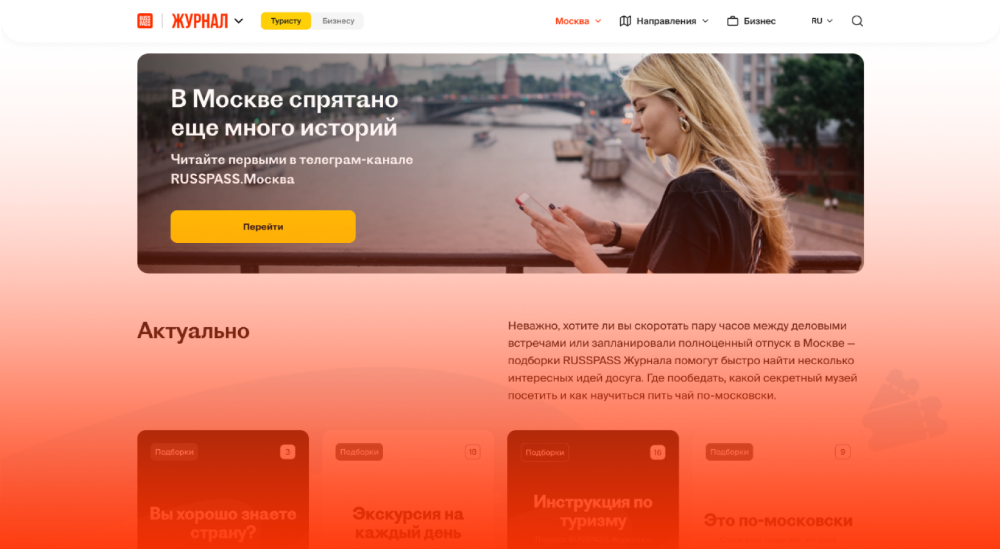
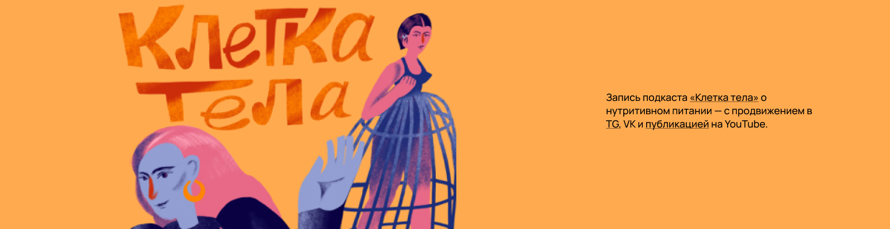
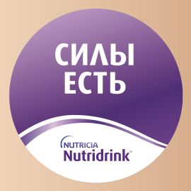
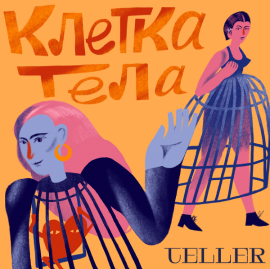
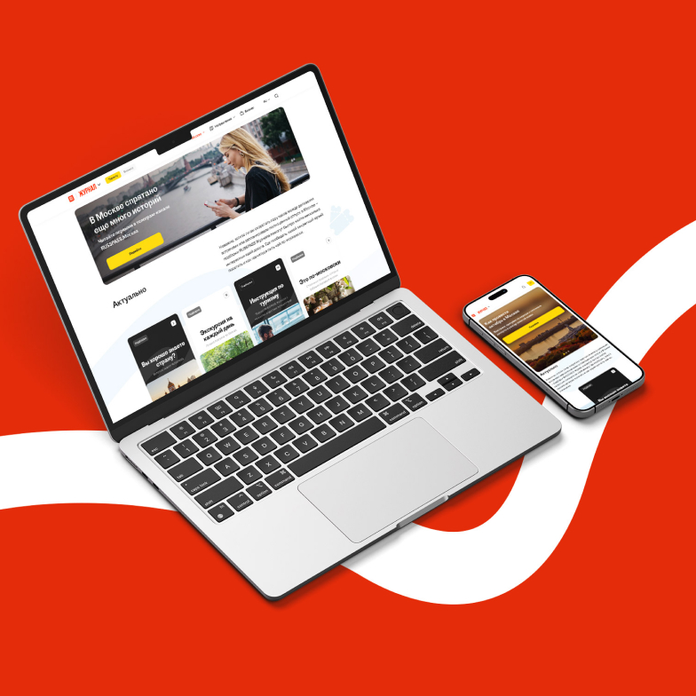
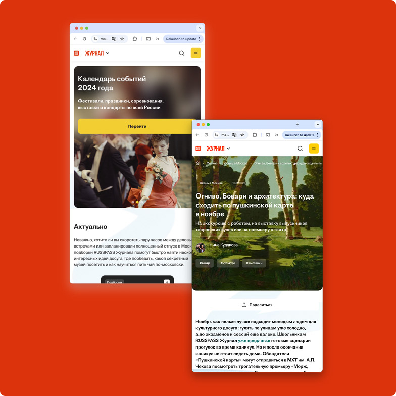
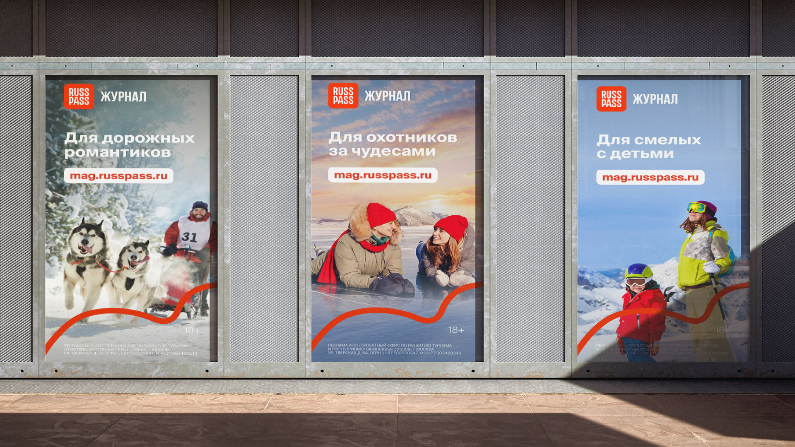
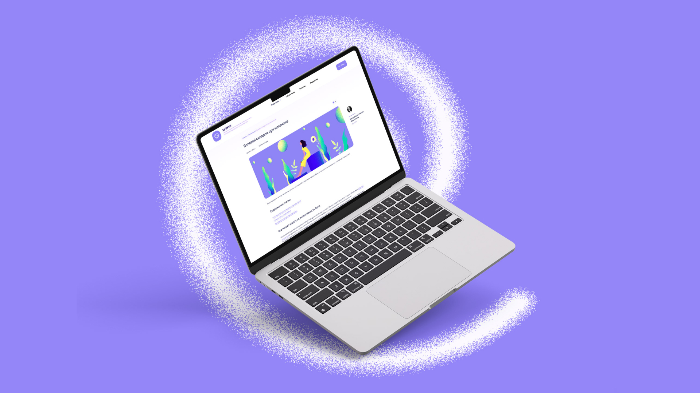

RUSSPASS Журнал
RUSSPASS Журнал — тревел-медиа, созданное на базе одноименного сервиса для путешественников по России: вдохновляем на исследование страны.
Показатели за 2023 год:
1,5 млн
уникальных посетителей
2,07 млн
визитов
2,7 млн
просмотров
0:01:11
ASD
Задача
Обеспечить городским и федеральным институциям ключевую точку входа для продвижения крупных городских и национальных проектов. Улучшать туристическую инфраструктуру и продвигать культуру путешествий в России: помочь бизнесу найти новые решения в области туризма, а путешественникам — новые направления внутри и вне своего города.
Решение
RUSSPASS Журнал — единственное тревел-медиа, выступающее «от лица» профильных столичных и региональных департаментов и органов исполнительной власти. Он функционирует одновременно в B2C- и B2B-сегментах, работая с городской, туристской и бизнесовой повестками. Журнал стал официальным рупором крупнейших городских профильных проектов, таких как фестиваль «Усадьбы Москвы», Московский урбанистический форум, Китайский новый год — 2024.
Информирование
Даем наиболее полный, актуальный и достоверный набор информации об онкологии совместно с экспертами компании и индустрии в целом
Дестигматизация
Опровергаем главный миф о том, что «рак — это неизбежная и скоропостижная смерть». Внедряем лайфстайл-форматы и личные истории, чтобы показать, что с онкологией можно жить
Поддержка
Оказываем эмоциональную и информационную поддержку тем, кто не справляется со стрессом при заболевании и при этом пока не готов / не может себе позволить психотерапию
Инструменты коммуникации
Учим, как правильно общаться на темы онкологии, лечения и профилактики различных заболеваний для разной аудитории
Бизнес-задача
Повышение осведомленности пациентов о методах диагностики и терапии, вовлечение их в процесс лечения.
Повышение онконастороженности среди населения для раннего выявления и лечения онкозаболеваний с целью увеличения эффективности лечения.
За четыре года работы проект «За руку» вырос в зонтичный бренд с развитой экосистемой.
- Написали почти 400 статей, в которых рассказывали о раке честно и открыто, мотивируя читателей бороться с болезнью, несмотря ни на что.
- Получили сотни положительных откликов о проекте от врачей и пациентов.
- Запустили более 10 спецпроектов — «Следи за красным», «Дыши полной жизнью», «Нет времени ждать», «Редкий — не значит один», «Путь пациента» и другие.
- Посещаемость сайта за этот период — почти миллион пользователей из ...... стран мира, включая Россию.
- Совмещаем науку и жизнь. Говорим на языке пациента, перемежаем информацию о медицине с материалами о поддержке.
- Высокий уровень доверия читателей и вовлеченности.
- С нами работают лучшие ученые и врачи, чтобы улучшить жизнь пациентов с онкологией.
Целевая аудитория
Пациенты
Люди, в чьей жизни появился диагноз «рак», а также те, кто находится в зоне риска развития заболевания. Прежде всего это пациенты со всеми видами онкологии на разных стадиях, проходящие лечение или только готовящиеся к нему
Caregivers
Близкие и родственники пациентов, которые ищут информацию о том, как помочь своим близким в борьбе с онкологическим заболеванием
Специалисты
Врачи и медицинский персонал, работающие в области онкологии и ищущие актуальные научные статьи, рекомендации и кейсы из практики
Группы риска
Одновременно ресурс ориентирован на более широкий круг читателей. Повышение онконастороженности позволяет снизить число онкобольных
Интеграции в СМИ
«НОЖ», Psychologies, «Доктор Питер», «Рамблер Доктор» — статья + ТГБ + соцсети
«Клетка тела»
Подкаст (аудио и видео) + ТГ-канал
Платное промо
«Силы есть» + «Клетка тела»

Посты в TG и VK:

«Силы есть» (серия публикаций);

«Клетка тела» (серия публикаций).
«Клетка тела» (серия публикаций).


Публикации в СМИ:
«НОЖ» — история Людмилы, которая сражается против рака молочной железы с метастазами;
Psychologies — история Кристины, столкнувшейся сразу с двумя видами рака желудка;
«Рамблер Доктор» — интервью с Юлией, которая борется с раком уже пять лет;
«Доктор Питер» — врач-онколог Марина Кукош о том, как и чем питаться онкологическим пациентам, если сил и желания принимать пищу почти нет.
Решение
RUSSPASS Журнал — единственное тревел-медиа, выступающее «от лица» профильных столичных и региональных департаментов и органов исполнительной власти. Он функционирует одновременно в B2C- и B2B-сегментах, работая с городской, туристской и бизнесовой повестками. Журнал стал официальным рупором крупнейших городских профильных проектов, таких как фестиваль «Усадьбы Москвы», Московский урбанистический форум, Китайский новый год — 2024.

Решение
Менее чем за год RUSSPASS Журнал с нуля стал одновременно:
Информационно-развлекательной площадкой для B2C-аудитории. Редакция производит востребованный контент, охватывающий все целевые возрастные группы.
Точкой входа для городских и региональных институций. RUSSPASS Журнал «упаковывает» в контент инфоповоды и крупные проекты, реализуемые органами исполнительной власти и крупными департаментами. В частности, успешно реализованы сезонные проекты «Лето в Москве» и «Зима в Москве», спецпроекты с фестивалем «Усадьбы Москвы» и Московским урбанистическим форумом.
Эффективным источником трафика в сервис RUSSPASS. Достигли конверсии в визит 15 % и максимального среди всех источников времени пребывания на сайте.
